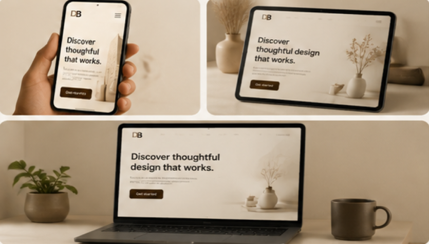

Een volledig responsief website-ontwerp voor een modern platform — van mobile-first wireframes tot een pixel-perfect eindontwerp in Figma.
De Uitdaging
De opdracht was om een volledige website te ontwerpen die zowel op desktop als mobiel optimaal werkt. Dat betekende niet simpelweg verkleinen — maar nadenken over welke informatie prioriteit heeft op elk formaat.
Een mobile-first aanpak zorgde voor duidelijke keuzes over hiërarchie en navigatie, die daarna uitgebreid werden voor grotere schermen.
Werkproces
Doelstellingen van het platform analyseren. Concurrenten bekijken en inspiratie verzamelen via moodboards.
Beginnen met het kleinste scherm om prioriteiten te stellen. Schetsmatige layouts omgezet naar digitale wireframes.
Kleurenpalet, typografie en spacing system bepalen. Alle schermen uitwerken in Figma met auto-layout.
Eindontwerp gepresenteerd met uitleg over ontwerpkeuzes en de redenering achter de structuur.
Eindresultaat
Het eindontwerp bevat een volledig design system met herbruikbare componenten: knoppen, kaarten, navigatie en formulieren — alles consistent van mobiel tot desktop.
Door het gebruik van Figma's auto-layout kunnen alle componenten eenvoudig worden aangepast zonder het hele ontwerp te moeten herzien.

Wat ik leerde
Door te beginnen met het kleinste scherm werden keuzes over inhoud en hiërarchie veel scherper.
Een goed grid maakt het ontwerp niet alleen mooier maar ook veel makkelijker te implementeren voor een developer.
Figma's component-systeem bespaart enorm veel tijd bij aanpassingen in een later stadium.